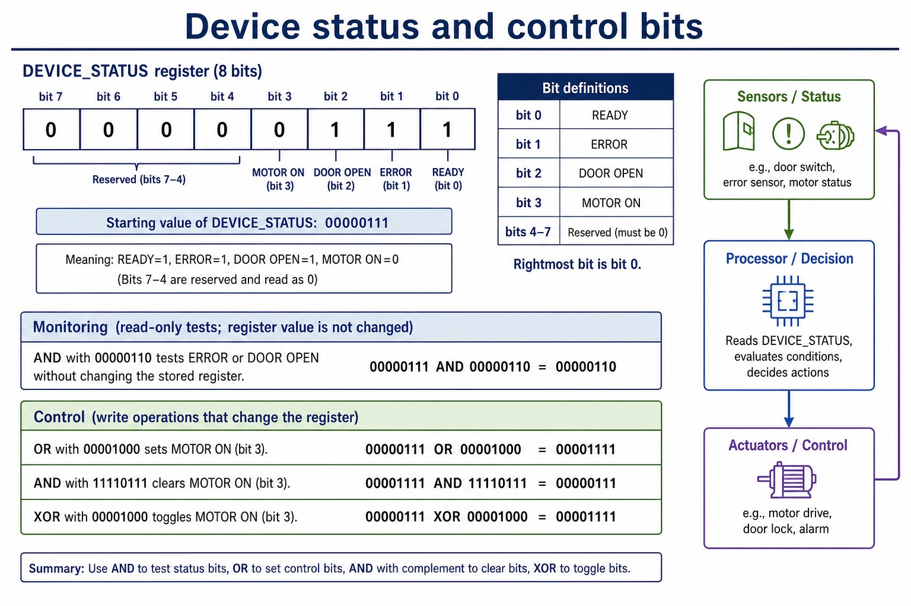
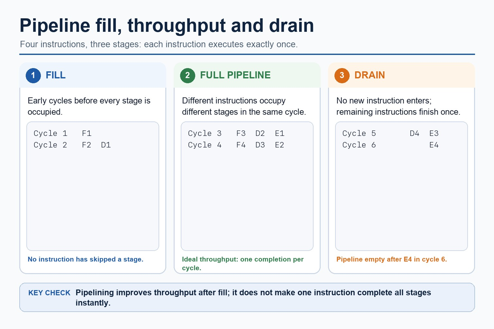
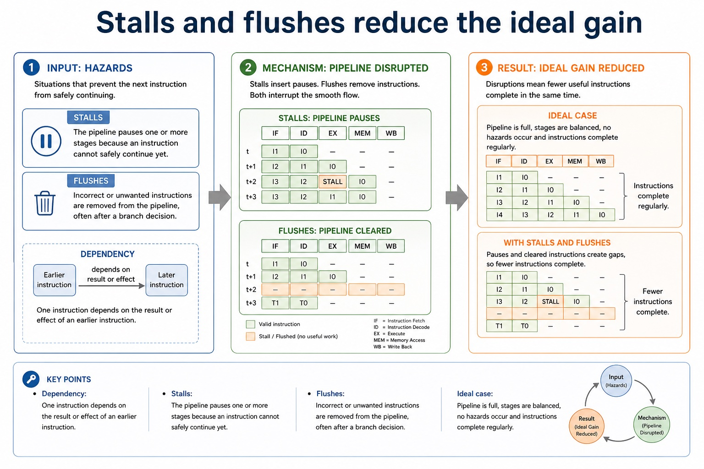

A bitwise AND mask can test or clear selected bits; an OR mask can set selected bits; an XOR mask can toggle selected bits. These operations are used to monitor and control individual flags without changing unrelated bits.
LSL is a logical left shift and LSR is a logical right shift. Distinguish logical shifts from arithmetic shifts and cyclic shifts: a logical shift inserts zero, an arithmetic right shift preserves the sign bit, and a cyclic shift wraps the bit that leaves one end back to the other.
Worked example: Test, set, clear and toggle one flag
For Status = 10110100, an AND mask tests a selected bit, an OR mask sets it, an AND mask with a zero at that position clears it, and an XOR mask toggles it. LSL moves bits left; LSR moves them right and fills with zero.
Bit masks use AND, OR and XOR to test, clear, set or toggle selected
bits. Logical, arithmetic and cyclic shifts move bit patterns in
different ways, so the operation must match the representation.
ApplyAND, OR and XOR masks to test, clear, set and toggle selected bits
Performlogical, arithmetic and cyclic left and right shifts
Controlmonitoring and control flags in a device register without changing unrelated bits
Value101
Mask010
OR111
A 1 in an OR mask sets the selected bit; other positions stay unchanged.
Why this matters
Section 4.3 explicitly requires logical, arithmetic and cyclic shifts, plus bit masks used in monitoring and control.
Common error
Do not call every right shift logical: an arithmetic right shift preserves the sign bit, while a cyclic shift rotates the discarded bit.
Warm-up hook
Which operation sets bit 2 without clearing the other bits?
Assume bit 0 is the rightmost bit and select the operation that changes only the required position.
Choose one. A set operation must preserve all non-selected bit positions.
Knowledge point 1
AND, OR and XOR masks target selected bits
Operation
Mask bit
Effect
AND
1 to preserve/test; 0 to clear
Isolate or clear selected positions.
OR
1 at each bit to set
Set selected bits without clearing other bits.
XOR
1 at each bit to toggle
Reverse selected bits while preserving the rest.
Bit masks target selected positions
Bit masks target selected positions: mechanism, reason, result, analogy and boundary condition.
Mechanism: AND with a 1 preserves or tests a bit, while AND with a 0 clears it.
Reason: OR with a 1 sets a bit without clearing unrelated positions.
Result: XOR with a 1 toggles a bit while XOR with a 0 preserves it.
Analogy: A stencil exposes only the positions that one operation may affect.
Boundary: Apply the operation independently to corresponding bit positions.
Knowledge point 2
Logical, arithmetic and cyclic shifts have different fill rules
LogicalMoves every bit left or right, inserts 0 into each empty position and discards the bit shifted out.ArithmeticTreats the pattern as signed: an arithmetic right shift repeats the sign bit; a left shift can overflow the fixed signed range.CyclicRotates the bit shifted out back into the empty position at the opposite end.DirectionEvery type can shift left or right; state the width and operation before calculating.
Eight-bit examples: 10110010 logical right → 01011001; arithmetic right → 11011001; cyclic right → 01011001. For 00110011 cyclic right → 10011001 because the discarded 1 returns at the left.
Instruction forms:LSL #n shifts all bits in ACC logically left by n places and fills from the right with zeros. LSR #n shifts all bits in ACC logically right by n places and fills from the left with zeros. Bits shifted beyond the fixed width are discarded.
Knowledge point 3
Bit fields monitor and control a device
Monitor a status flag
If bit 3 means “door open”, AND the status byte with 00001000. A non-zero result means that flag is set.
Control an output flag
OR with 00000100 to set motor-enable bit 2; AND with 11111011 to clear it; XOR with 00000100 to toggle it.
Monitor and control a device register

Monitor and control a device register: mechanism, reason, result, analogy and boundary condition.
Mechanism: AND a status byte with a one-bit mask to test a named device flag.
Reason: OR a control byte with a one-bit mask to set the selected output flag.
Result: AND with an inverted mask clears a flag; XOR with a one-bit mask toggles it.
Analogy: A control panel changes one labelled switch without disturbing the others.
Boundary: The processor applies the rule; a sensor supplies input and an actuator performs output.
Core practice
Calculate, then explain the bit effect
Calculate 00110110 logical shift left by one place. Show answer
01101100; 0 enters on the right and the leftmost bit is discarded.
Calculate 10110110 arithmetic shift right by one place. Show answer
11011011; the sign bit 1 is preserved.
Calculate 00110111 cyclic shift right by one place. Show answer
10011011; the discarded rightmost 1 rotates into the leftmost position.
Set bit 2 of 10100000 without changing other bits. Show answer
10100000 OR 00000100 = 10100100.
Extension: not an explicit AS 2027–2029 requirement
Pipelining and factors that limit performance
The remaining material is optional processor-performance enrichment after the required bit-manipulation lesson.
Knowledge point 1
Pipelining overlaps instruction-cycle stages
PipelineA processor technique where multiple instructions are at different stages of execution at the same time.FetchThe next instruction is fetched from memory using the program counter and memory registers.DecodeThe control unit interprets the instruction and prepares required operands/control signals.ExecuteThe instruction is carried out, such as arithmetic, memory access or a branch.
Lesson fact: A processor technique where multiple instructions are at different stages of execution at the same time.
Lesson fact: The next instruction is fetched from memory using the program counter and memory registers.
Lesson fact: The control unit interprets the instruction and prepares required operands/control signals.
Lesson fact: The instruction is carried out, such as arithmetic, memory access or a branch.
Knowledge point 2
Without and with pipelining
Without pipelining
Instruction 1 completes fetch, decode and execute before instruction 2 begins.
I1: F D EI2: F D EI3: F D E
Three instructions with three stages each may take nine stage slots.
With pipelining
Instruction 2 can be fetched while instruction 1 is decoded; instruction 3 can be fetched while instruction 1 executes.
C1: F1C2: F2 D1C3: F3 D2 E1C4: D3 E2C5: E3
After the pipeline fills, one instruction can complete per cycle in the ideal case.
Without and with pipelining
Without and with pipelining: source-grounded visual explanation.
Lesson fact: Without pipelining, each instruction completes fetch, decode and execute before the next starts.
Lesson fact: In an ideal three-stage pipeline, instruction 1 completes in cycle 3, instruction 2 in cycle 4 and instruction 3 in cycle 5.
Lesson fact: Instruction 3 must execute in cycle 5; it is not complete after decode in cycle 4.
Knowledge point 3
Throughput improves, but latency still exists
LatencyThe time for one instruction to pass from fetch through decode to execute.ThroughputThe number of instructions completed per unit time once the pipeline is full.FillThe early cycles before every pipeline stage is occupied.DrainThe final cycles when no new instructions enter but existing ones finish.
Why this matters
Exam wording may ask "why performance can improve" rather than "why every instruction is faster". Answer with throughput.
Throughput improves, but latency still exists

Throughput improves, but latency still exists: source-grounded visual explanation.
Lesson fact: A three-stage pipeline processes each instruction through fetch, decode and execute exactly once.
Lesson fact: For four instructions, cycles 1 and 2 fill the pipeline.
Lesson fact: In cycles 3 and 4, different instructions occupy fetch, decode and execute concurrently.
Lesson fact: Pipelining improves throughput after fill but does not remove the latency of one instruction.
Knowledge point 4
Pipeline hazards: why faster is not always simpler
Hazard
Cause
Consequence
Data hazard
An instruction needs a result that a previous instruction has not produced yet.
The pipeline may stall until the needed value is available.
Control hazard
A branch or jump changes which instruction should be fetched next.
Incorrectly fetched instructions may need to be discarded or the pipeline may wait.
Resource hazard
Two stages need the same hardware resource in the same cycle.
One stage may wait, reducing the ideal performance gain.
Pipeline hazards: why faster is not always simpler
Pipeline hazards: why faster is not always simpler: source-grounded visual explanation.
Lesson fact: Consequence
Lesson fact: Data hazard
Lesson fact: An instruction needs a result that a previous instruction has not produced yet.
Lesson fact: The pipeline may stall until the needed value is available.
Lesson fact: Control hazard
Lesson fact: A branch or jump changes which instruction should be fetched next.
Lesson fact: Incorrectly fetched instructions may need to be discarded or the pipeline may wait.
Lesson fact: Resource hazard
Lesson fact: Two stages need the same hardware resource in the same cycle.
Lesson fact: One stage may wait, reducing the ideal performance gain.
Knowledge point 5
Stalls and flushes reduce the ideal gain
StallThe pipeline pauses one or more stages because an instruction cannot safely continue yet.FlushIncorrect or unwanted instructions are removed from the pipeline, often after a branch decision.DependencyOne instruction depends on the result or effect of an earlier instruction.Ideal casePipeline is full, stages are balanced, no hazards occur and instructions complete regularly.
Stalls and flushes reduce the ideal gain

Stalls and flushes reduce the ideal gain: source-grounded visual explanation.
Lesson fact: The pipeline pauses one or more stages because an instruction cannot safely continue yet.
Lesson fact: Incorrect or unwanted instructions are removed from the pipeline, often after a branch decision.
Lesson fact: Dependency
Lesson fact: One instruction depends on the result or effect of an earlier instruction.
Lesson fact: Ideal case
Lesson fact: Pipeline is full, stages are balanced, no hazards occur and instructions complete regularly.
Interactive tool
Bit-operation analyser
Select a fixed-width operation and inspect its result, mechanism and common error.
Worked examples
Trace masks, shifts and device bits
Begin with an AND mask to test a selected status bit, then compare OR and XOR masks before tracing each shift rule.
5-minute quiz
Practice with instant checking
Use exact eight-bit results and the operation names required by the instruction set.
Practise an AND mask to test a status bit, an OR mask to set a control bit and an XOR mask to toggle a selected bit.
Mistake debugging
Fix the bit-manipulation explanation
Exam-style questions
Cambridge-style questions with expandable mark schemes
These original Cambridge-style questions assess LSL/LSR, all three shift types, masks and device monitoring/control.
Summary
Choose the operation from the required bit effect
AND maskTest or clear selected bits.
OR maskSet selected bits.
XOR maskToggle selected bits.
Logical shiftInsert zero into each empty position.
Arithmetic shiftPreserve signed meaning, including the sign bit on a right shift.
Cyclic shiftRotate the discarded bit to the opposite end.
Homework
Make bit-manipulation answers exact
Calculate one left and one right shift for each of logical, arithmetic and cyclic shifting.
Design masks to test, set, clear and toggle bit 4 of an eight-bit register.
Explain why an arithmetic right shift differs from a logical right shift for a negative value.
Write a four-mark answer explaining how a status bit can monitor a device.
Correct this sentence: "Every right shift inserts zero on the left."